← 返回阅读库 · 原论文目录
论文讲解阅读文档 · 新模型 · v055
DeepLab V3V3+[1706.055871802.02611]
视频时长 00:10:34；讲解文字 4,943 字符；提取讲解画面 29 张。按视频原顺序阅读，每段文字保留时间戳。
文字来自整段视频的自动语音转写，按自然停顿分段，并与 PPT / 论文页面 / 演示画面对齐。未将讲解压缩为摘要；术语、数字和口述公式请结合画面及原论文核对。 阅读稿已校正规范部分明确术语误识别；原始逐字稿和每处修改记录另行保留。
讲解画面为源视频截图（640×360），不是可编辑 PPT 文件。全片按每秒 2 帧扫描内容变化，逐步展开页保留；连续动画保留代表画面。清晰度受源视频限制。
下载完整资料包 · 含离线 HTML、PDF、Word、全部 PPT 画面和字幕。
原论文与材料
Encoder-Decoder with Atrous Separable Convolution for Semantic Image Segmentation · 下载完整 PDF（18 页）
Rethinking Atrous Convolution for Semantic Image Segmentation · 下载完整 PDF（14 页）
按时间阅读
00:00:00–00:00:10 · 画面 001
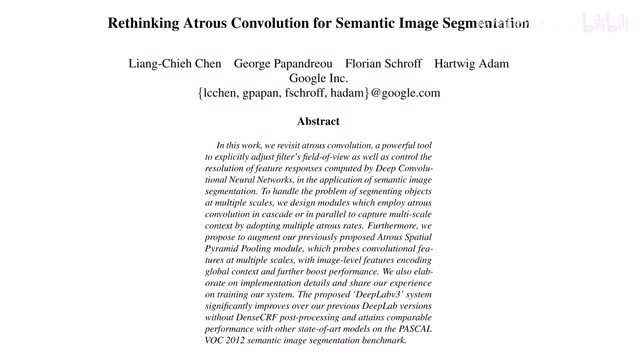
00:00:00–00:00:10 · 画面 001大家好，今天我们继续来介绍 DeepLabRethinking Atrous Convolution for Semantic Image Segmentation。这个呢是 DeepLab V3。那么本文研究的重点呢就是我们如何处理不同尺度下面的这个图像的内容。那么首先呢我们看到这里呢，作者列举了四种可行的方案。第一种呢是我们最初期最简单的这个图像金字塔。
00:00:10–00:00:18 · 画面 002
00:00:10–00:00:18 · 画面 00200:00:18–00:00:19 · 画面 003
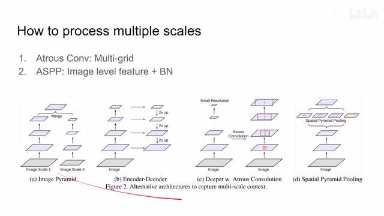
00:00:18–00:00:19 · 画面 00300:00:19–00:00:51 · 画面 004
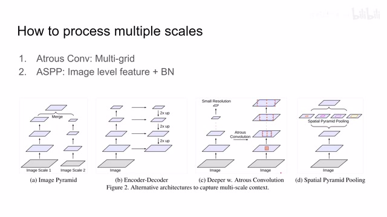
00:00:19–00:00:51 · 画面 004我们把图像缩放成不同的纸路，然后送到我们的网络里面，最后把结果融合起来就可以了。那么此外，像比如说 unet，它使用的就是 Encoder 和 Decoder 这样的一个结构。因为 Encoder 把图像拆成不同的层次，让它每个层次有直接连接连接到 Decoder，然后再这样子一步一步的给它解回来，最后输出一个标签。那么除此之外，在本文中作者探讨了以下两种图节。
00:00:51–00:00:52 · 画面 005
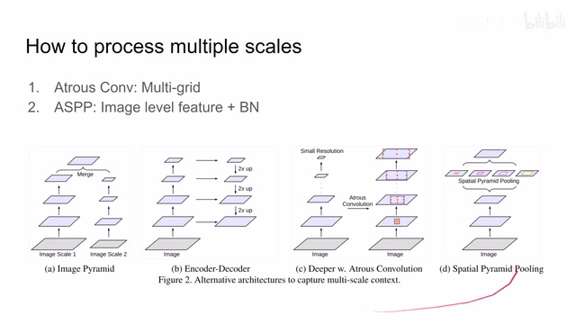
00:00:51–00:00:52 · 画面 00500:00:52–00:01:30 · 画面 006
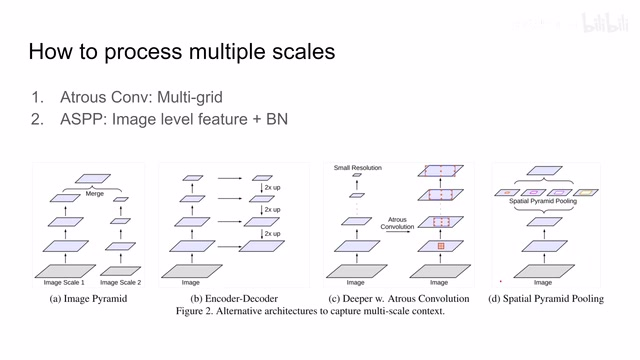
00:00:52–00:01:30 · 画面 006第一种是开发 Atrous Convolution 它的潜能。我们在一个传统的图像的网络上，把它最后的几个 block 不断的加深。在加深网络同时使用更长的 Atrous Convolution Rate 来使我们的网络捕捉到更加全局的信息。同时我们在每个 block 里面 Atrous Convolution Rate 是有一定比例变化的，这个后面我们仔细会介绍。这个是一种途径。
那么第二种途径呢是对我们这个 Atrous Spatial Pyramid Pooling 这个方法呢来下手。那么在原来的基础之上呢，作者曾经添加了这个 Image Level 的 Feature，也就是整个图像里面的所有的 Feature 平均到一个值，然后呢再加了一个 Batch Normalization。在这每一个分支后面都有一个 Batch Normalization。所以呢，本文的工作呢就是探讨这样一种构型和这样一种构型哪一种构型呢，它能够取得更好的性能。
00:01:30–00:01:31 · 画面 007
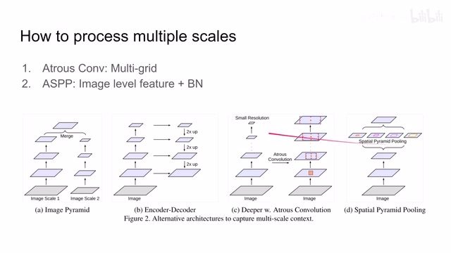
00:01:30–00:01:31 · 画面 00700:01:31–00:01:37 · 画面 008
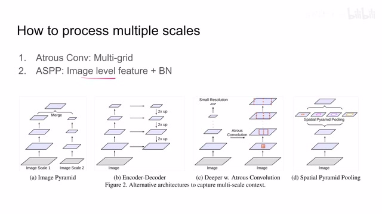
00:01:31–00:01:37 · 画面 00800:01:37–00:01:38 · 画面 009
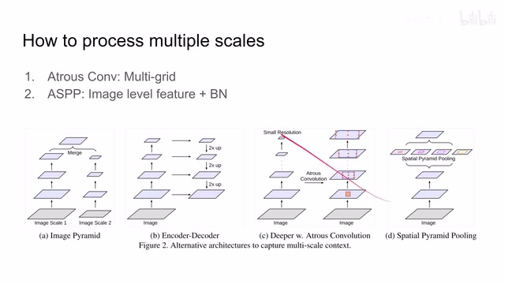
00:01:37–00:01:38 · 画面 00900:01:38–00:01:50 · 画面 010
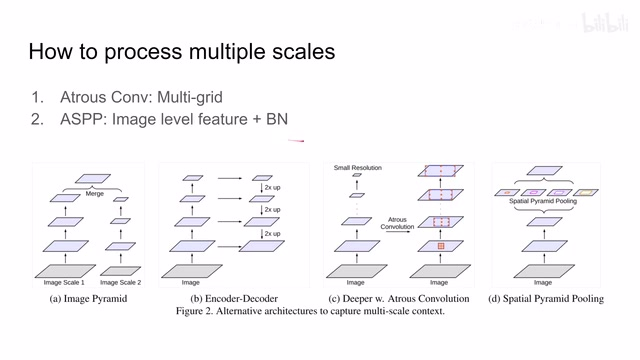
00:01:38–00:01:50 · 画面 010那么我们首先看到这个 multi grid 还有这个更加深的网络。那这个呢是我们传统的一个 ResNet。这里呢作者说我们帮这个网络更深一点吧，我们就把这个 blockfall 复制复制复制复制。同时呢我们增加这个 output stride 来让我们的网络呢关注到更加全局的信息。
00:01:50–00:03:37 · 画面 011
00:01:50–00:03:37 · 画面 011那么这样子虽然网络更深了，但是它的坏处显而易见就是我们的 Spatial Resolution 空间尺度上分辨率下降得非常厉害。那么为了克服这个问题，走在之前的 Deep Lab 的版本里面我们就说了使用 Atrous Convolution。我们保持 output stride 始终在一个较低的水平，通过更改 Convolution 的 rate 来使我们 feature 的 Spatial Resolution 在随着 Block 的增加它的 Spatial Resolution 并不下降。那么这个就是加深的网络。
同时作者使用 multi-grid，因为在 block4 以及后面的这些 block 里面，它在每一个 block 里面都是具有三个 convolutional layer。那么这三个 convolutional layer 作者认为说我如果使用不同的 atrous rate，那么理论上它就应该能捕捉到不同尺度下面的图像的特征。
这样子呢假如说我们的这个整个这个 block 它的 output stride 是这个 16 它的 multi-grid 的比例呢是 124 我们以这个 block4 为例那么它整个这个 block 的 rate 呢是 2 那么具体到每一个这个 convolutional layer 它的这个 atrous rate 呢就是 2 乘以 1 那第一层就是 2 第二层呢是 4 第三层呢是 8相应的对于 block5 来说它整个 block 的 rate 是 4 那么实际上每一个 convolution layer 它的 rate 就是 4 乘以 1 4 乘以 2 4 乘以 4 这样的一个构型这个就是作者应用的 multi-grid 思想那么以上就是作者来尝试解决 multi-scale 问题的第一种构型那么此外我们还有第二种构型就是 ASPP Atrous Spatial Pyramid Pooling 这个机制是从 DeepLab V2 引入的
00:03:37–00:03:38 · 画面 012
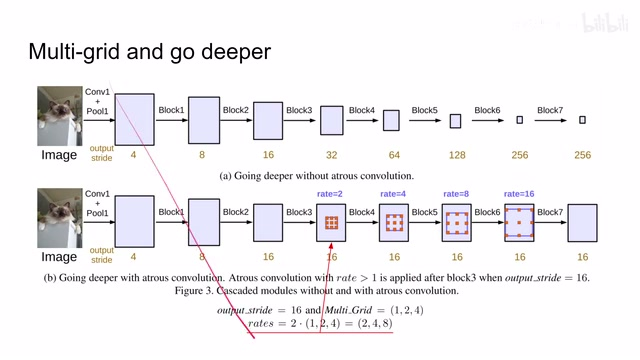
00:03:37–00:03:38 · 画面 01200:03:38–00:03:44 · 画面 013
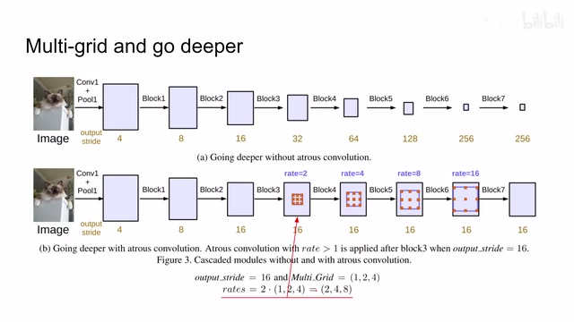
00:03:38–00:03:44 · 画面 01300:03:44–00:04:53 · 画面 014
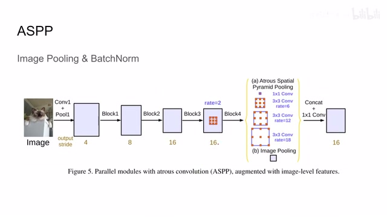
00:03:44–00:04:53 · 画面 014他的思想就是我有不同的 path 每个 path 是来每个 path 使用不同 rate 的 atrous convolution 用它们来分别捕捉不同尺度上面的图像的信息那么在 V3 里面作者想我想要捕获图像更大尺度的信息我如果只是增加 rate 的话你想就相当于我们 convolution kernel 它越来越大那么这个 kernel 的大小对比我们 feature 的这个 spatial resolution 来说那它是越来越大那这样呢这个里面能取得的有效的像素数量呢就会越来越少它就不能反映整个图像尺度的 feature 所以呢我干脆不如直接把整个 feature map 呢做一下这个 average pooling 把每一个 channel 上的这个 feature 呢全部平均成一个值那么这个值呢就应该反映出整个图像全局的特征
所以说相对于 V2 上只有 4 个 branch 来说我们再增加一个 branch 直接计算全图每个 channel 的 average 这样来反映全图的信息此外作者还在每个 branch 后面加了 batch normalization 这样子我们就能够得到反映不同尺度的 feature 然后把这些 feature 串接起来最后再过一个 1x1 的 convolution
00:04:53–00:04:54 · 画面 015
00:04:53–00:04:54 · 画面 01500:04:54–00:05:33 · 画面 016
00:04:54–00:05:33 · 画面 016那么这里有一个细节需要注意的是因为我们这个 image pooling 它是每个 channel 做的一个平均值它的 spatial resolution 就是 1 乘 1 所以我们需要把它扩展复制成跟上面一样大小的尺寸然后才能进行串接此外值得一提的是在 block4 里面作者也使用 multi grid 那么以上就是作者尝试的两种用来处理不同尺度下图像的方法然后我们就可以看到结果了
00:05:33–00:07:23 · 画面 017
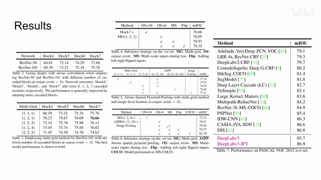
00:05:33–00:07:23 · 画面 017那左边呢首先作者研究的是使用了更深的网络那显然呢我们的网络越深效果越好使用更强的这个网络呢效果越好那此外呢作者还探讨这个 Multi GridMulti Grid 的三层 convolution 它的比例它的 Rate 应该怎么选随后呢我们看到还有一些在测试中使用的技巧比如说这个更改 output stride 的值使用不同尺度的图像输进网络里面包括水平翻转这个图像等等可以看到这些都是对系统有改进的然后我们再来探讨一下 ASPP 它的影响这里的 multi-grid 控制的就是 block4 的 multi-grid 然后后面接 ASPP4 个 branch 的 ASPP 和 5 个 branch 的 ASPP 这里有朋友可能问你就不只有 3 个数和只有 4 个数为什么叫 4 个 branch 和 5 个 branch 呢但是因为它还有一个 branch 是 1x1 的 convolution 然后再加上 image pool 里可以看到
这样的效果是最好的而且比我们直接加深网络它得到的结果好所以作者认为我们还是不要加深网络把 ASPP 好好用一下就可以了那么最后与之前这个表相似的这个表我们使用 ASPP 它用的参数然后再增加一些我们测试时的这些技巧甚至包括培训这里可以看到作者汇报的结果这个是 validation set 那么这边是在 test set 上汇报的结果对比之前的方法，特别是 DeepLab V2，本文提出的方法就 outperform 之前这些方法。然后如果加上 JFT 做 pretrain 的话，它的性能会进一步提升。同时你可以注意到，V3 相比于 V2 还取消掉 CRF 条件随机场。那么以上就是 DeepLab V3，可以看到它是对 V2 的一个更加细致的对网络结构上的调整。
那么随后呢我们就可以进行到这个 V3 Plus Encoder-Decoder with Atrous Separable Convolution for Semantic Image Segmentation 那你从标题可以看到 Encode Decoder 还真香然后呢还有这个 Separable Convolution 这个之前如果你看过我们的 MobileNet 系列的话应该已经非常熟悉了那么我们具体来看在这篇论文里呢作者说啊我们的原来的方法呢是这个样子这个是 DeepLab V3 然后对比于这个 Encode 和 Decoder 的结构呢哎我们还是想要
00:07:23–00:07:35 · 画面 018
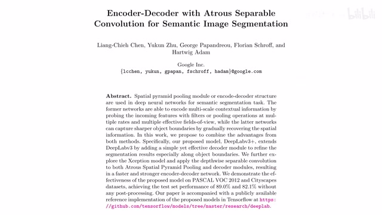
00:07:23–00:07:35 · 画面 01800:07:35–00:07:36 · 画面 019
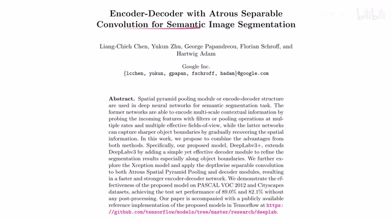
00:07:35–00:07:36 · 画面 01900:07:36–00:07:41 · 画面 020
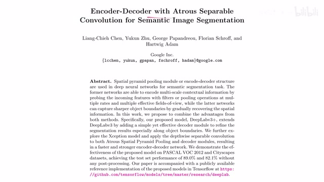
00:07:36–00:07:41 · 画面 02000:07:41–00:07:45 · 画面 021
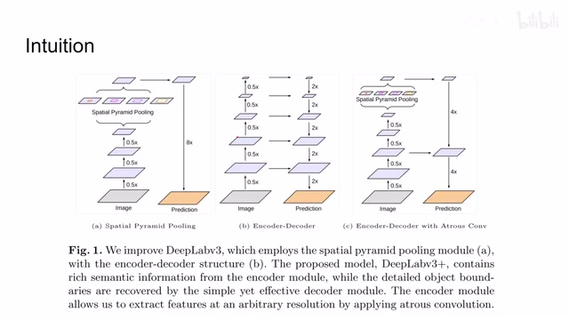
00:07:41–00:07:45 · 画面 02100:07:45–00:07:47 · 画面 022
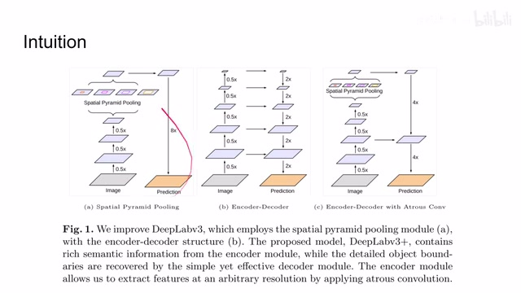
00:07:45–00:07:47 · 画面 02200:07:47–00:07:55 · 画面 023
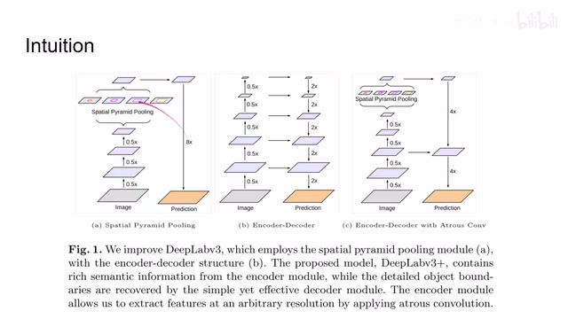
00:07:47–00:07:55 · 画面 023接近了，把这个机制呢引入到我们的 DeepLab 里面，这个呢就是 DeepLab V3 Plus。那具体来看呢，这里呢就是把刚刚的结构图横过来了，我们的 convolution neural networkASPP 有 5 个 branch，然后呢把它们串接起来做一个变化，得到我们原来的 prediction。然后呢上采样把我们第一位的这个 feature 拉过来，过 convolution 两个串接起来，然后呢再过 convolution，最后再上采样，最后得到我们的预测，总之是一种很有意思的组合。
00:07:55–00:07:56 · 画面 024
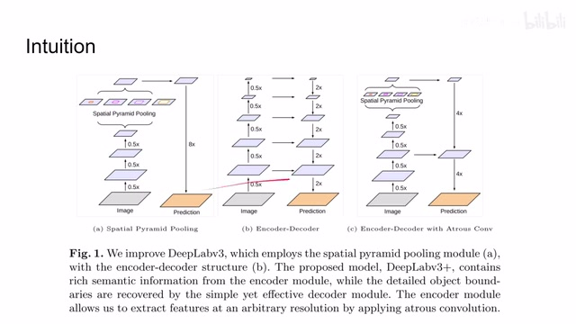
00:07:55–00:07:56 · 画面 02400:07:56–00:07:58 · 画面 025
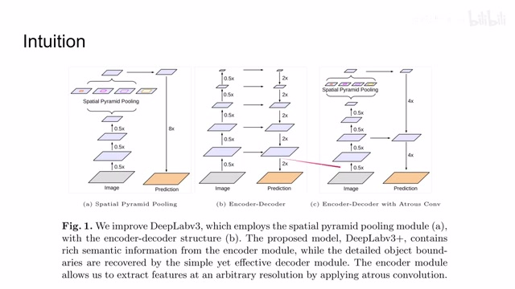
00:07:56–00:07:58 · 画面 02500:07:58–00:08:48 · 画面 026
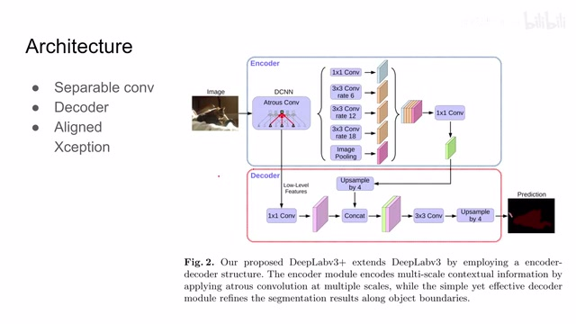
00:07:58–00:08:48 · 画面 026那么除此之外呢，为了进一步提升性能，这里作者引入了额外的两点这个技术。第一个呢是这个 separable 的 convolution，跟这个 mobile net 里面的一样，就是把我们的一个大的 convolution 拆成 1 乘 1 和这个 depthwise 的 convolution。那第二个呢就是更换了这个 backbone，由原来的 resnet 101 呢变成了这个 aligned Xception。那么下面我们具体来看这个 aligned Xception 呢，它是什么样一个结构。那么相对于做 classification 这个 Xception 呢
00:08:48–00:09:22 · 画面 027
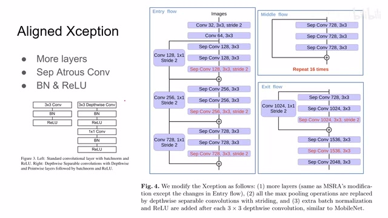
00:08:48–00:09:22 · 画面 027首先作者加深了网络，原来的网络里面用 max pooling 来帮助我们减少 feature map 的大小。那么现在既然我们有 Atrous convolution，它就可以替代 max pooling。这里我们再次回顾一下 mobile net 里面的 depthwise convolution 还有 1.8.1 convolution，它的结构就是一个大的卷积拆成两个小的卷积。同时记得我们后面加了 batch normalization 和 ReLU。那么以上就是 DeepLab V3 Plus 它的主要技术要点。
我们直接来看作者汇报的结果。我们首先在论文原文里面，作者先测试了 resnet 做 backbone，测试一堆我们在之前 V3 里面介绍过的这些东西。当然了，resnet 是不如 Xception 的。
00:09:22–00:10:34 · 画面 028
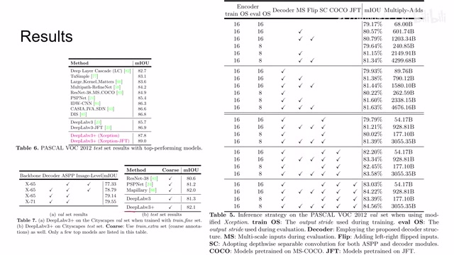
00:09:22–00:10:34 · 画面 028所以在这个表格里面，作者就测试了 Xception 作为 backbone，你可以看到把这些所有的 feature 都加上之后，它的性能的改善是非常可观的。那么最后来到 test set 上，然后对比之前的 DeepLab v3v3 plus ，因为换了 backbone 加了 decoder，所以性能甚至 outperform 之前 pre train 的 DeepLab v3。那么如果你加上 pre train 效果会更好，这个是本文的最好的结果。
那么此外呢作者还测试了像其他的数据集包括这个 CityScapes 等等数据在这里感兴趣的朋友呢可以到论文的原文中查看那总的来说呢 DeepLab 在结构上的改进呢是一步一步来非常直观的而且你可以明显的看到它的探索的过程而在结果的汇报上呢因为这篇论文发表的时间相对比较早所以呢你可以看到里面有很多 engineering trick 在里面当然这并不影响本文的核心思想的有效那么以上就是我对这个 DeepLab 系列的一个简单的分析，那么感谢您的收看，再见
00:10:34–00:10:34 · 画面 029
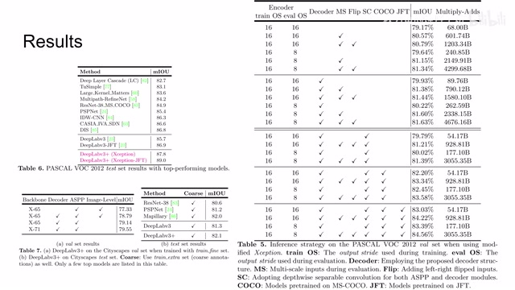
00:10:34–00:10:34 · 画面 029转写与来源说明 · 1 个自动复核提示
保留 25 个原始语音片段，1 个片段触发自动复核提示。提示仅用于定位可能的术语、重复或识别问题，不等于已确认错误。
讲解画面为源视频截图（640×360），不是可编辑 PPT 文件。全片按每秒 2 帧扫描内容变化，逐步展开页保留；连续动画保留代表画面。清晰度受源视频限制。
原视频：paper/合集_2026-10-16_新模型/[论文简析]DeepLab V3V3+[1706.055871802.02611].mp4
SHA-256：bc742d227527578ef92fb16ea04eac7bf7c9b464deaa92e5f69516eb3eb05fb2
那么我们首先看到这个 multi grid 还有这个更加深的网络。那这个呢是我们传统的一个 ResNet。这里呢作者说我们帮这个网络更深一点吧，我们就把这个 blockfall 复制复制复制复制。同时呢我们增加这个 output stride 来让我们的网络呢关注到更加全局的信息。
全文按视频语音与画面制作。原论文可从上方链接下载；完整资料包保留全文、原始逐字稿、字幕和校对记录。